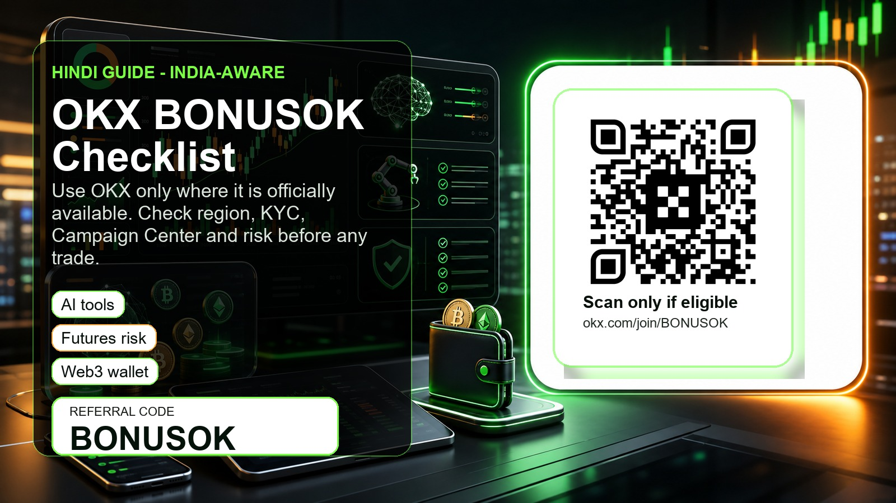

OKX Referral Code BONUSOK: Hindi Guide for India-Aware Active Traders

Short answer: अगर आप “OKX referral code”, “OKX invite code”, “OKX bonus code” या “BONUSOK code” search कर रहे हैं, तो code है BONUSOK. लेकिन India-aware users के लिए पहला step bonus नहीं है. पहला step है: क्या OKX आपके country of residence में officially available है, और क्या आपके OKX Campaign Center में reward/task सच में दिख रहा है?
Referral link: https://www.okx.com/join/BONUSOK
Referral / invite code: BONUSOK
Disclosure: इस page में referral link है. अगर आप इस link/code से register या trade करते हैं, तो हमें commission मिल सकता है. Crypto trading risky है. Futures, leverage, stock perpetuals, bots, copy trading और AI-assisted trading में loss हो सकता है. Bonus, secret prize या reward guaranteed नहीं है; eligibility, KYC, region, deposit, trading activity और OKX rules पर depend करता है.
India users के लिए सबसे जरूरी warning
यह guide Hindi-speaking और India-aware readers के लिए है, लेकिन इसे India residents के लिए direct solicitation न समझें. 2024 में media reports के अनुसार OKX ने India में CeFi services offboard की थीं और users से positions close करके funds withdraw करने को कहा था. इसलिए अगर आप India में रहते हैं, तो register, deposit या trade करने से पहले official OKX site/app, local law, FIU/registration status, tax impact और product availability verify करें.
अगर आपके region में OKX officially available नहीं है, तो VPN, fake KYC, गलत country, borrowed account या workaround use न करें. Active trader बनने से पहले compliant trader बनना जरूरी है.
OKX की latest trader updates क्यों देखनी चाहिए?
OKX active traders के लिए लगातार नए products add कर रहा है. ये features तभी useful हैं जब आपके region में allowed हों और आप risk समझते हों:
- ETH और SOL USD-margined expiry futures: OKX ने ETH/USD और SOL/USD expiry futures launch schedule announce किया. यह उन traders के लिए relevant है जो expiry dates, basis, funding, liquidation और calendar risk समझते हैं.
- New equity / stock perpetuals: OKX ने PANW, IREN और latest announcements में CRDO, CIEN, ISRG, FLNC जैसे equity-linked perpetual futures list किए. Stock perpetuals normal spot crypto नहीं हैं; इनमें index, funding, liquidity और regional restrictions check करना जरूरी है.
- OKUSD yield-bearing collateral for VIPs: यह retail “free yield” signal नहीं है. अगर आप VIP/collateral products देखते हैं, तो collateral risk, terms और availability अलग से पढ़ें.
- Agent Trade Kit और AI-assisted workflows: OKX AI/agent tools trading को automate करने में help कर सकते हैं, लेकिन signal या profit guarantee नहीं देते. API permissions, order size, stop loss और manual supervision रखें.
- Campaign Center / New User Bonus: OKX terms के अनुसार tasks और rewards sign-up country और activity channel के हिसाब से अलग हो सकते हैं. Code apply होने के बाद भी Campaign Center में task verify करना जरूरी है.
BONUSOK use करने से पहले 9-step checklist
- Region check: OKX आपके country of residence में officially available है या नहीं?
- KYC check: क्या आप सही identity और सही country के साथ KYC complete कर सकते हैं?
- Product check: Spot, futures, stock perpetuals, Web3 wallet, DEX, bots या AI tools में से कौन-सा product आपके region में allowed है?
- Code check: Sign-up flow में
BONUSOKदिख रहा है या नहीं? - Campaign Center check: Registration के बाद reward/task visible है या नहीं? अगर task नहीं दिखता, तो deposit/trade से पहले support या official terms देखें.
- Task check: क्या required task single trade मांगता है? कई bonus tasks multiple small trades को combine करके count नहीं करते.
- Fee and spread check: Maker/taker fees, funding, spread और withdrawal fees bonus से ज्यादा important हो सकते हैं.
- Risk plan: Max loss, leverage limit, stop loss, position size और liquidation price पहले लिखें.
- Withdrawal check: Reward lock-up, expiry, withdrawal restrictions और portfolio balance requirement समझें.
किस type के trader के लिए यह guide useful है?
यह material उन users के लिए बनाया गया है जो:
- OKX referral code BONUSOK apply करने से पहले eligibility verify करना चाहते हैं;
- active spot/futures trader हैं और new listings को risk checklist के साथ evaluate करते हैं;
- AI tools, bots या copy trading को supervised workflow की तरह देखते हैं, passive income promise की तरह नहीं;
- India/regional restrictions को bypass नहीं करना चाहते;
- bonus chase करने से पहले fees, withdrawal rules और product risk पढ़ते हैं.
यह guide उन users के लिए नहीं है जो “free bonus” के लिए blind deposit करना चाहते हैं, derivatives को बिना risk limit use करते हैं, या country restrictions bypass करना चाहते हैं.
Practical setup: अगर OKX आपके region में available है
- Official link खोलें: https://www.okx.com/join/BONUSOK
- Referral/invite code field में BONUSOK confirm करें.
- KYC country और residence details सही रखें.
- Campaign Center में New User Bonus या relevant task open करें.
- पहले terms पढ़ें: required deposit, required trade, valid period, reward lock-up, withdrawal rules.
- First trade छोटा रखें. Bonus पाने के लिए over-leverage न करें.
- Futures, expiry futures या stock perpetuals तभी use करें जब liquidation/funding risk समझते हों.
Quick FAQ
OKX referral code क्या है?
BONUSOK
OKX invite link क्या है?
https://www.okx.com/join/BONUSOK
क्या BONUSOK से guaranteed prize मिलता है?
नहीं. Tracked offer “secret prize up to $1,000” है, लेकिन eligibility, KYC, region, deposit, trading activity और OKX rules पर depend करता है.
India में रहने वाले user को क्या करना चाहिए?
पहले official availability और local compliance verify करें. अगर OKX आपके लिए available नहीं है, तो register/deposit/trade न करें.
AI trading tools safe हैं?
AI tools helpful हो सकते हैं, लेकिन गलत, late या unsuitable output दे सकते हैं. Small test size, restricted API permissions और manual review जरूरी है.
Stock perpetuals beginner-friendly हैं?
आम तौर पर नहीं. इनमें equity market reference, funding, liquidity, index risk और regional restrictions होते हैं. पहले documentation पढ़ें.
Sources checked on 17 June 2026
- OKX Latest Announcements: https://www.okx.com/help/section/announcements-latest-announcements
- OKX ETH/SOL expiry futures announcement: https://www.okx.com/help/okx-will-launch-eth-and-sol-usd-margined-expiry-futures
- OKX stock perpetuals listings: https://www.okx.com/help/okx-to-list-perpetual-futures-for-panw-and-iren-equities
- OKX stock perpetuals FAQ: https://www.okx.com/help/stock-perpetuals
- OKX Agent Trade Kit FAQ: https://www.okx.com/help/agent-trade-kit-faq
- OKX New User Bonus terms: https://www.okx.com/help/new-user-bonus-program-terms-and-conditions
- OKX Affiliate Program rules: https://www.okx.com/help/okx-affiliate-program-rules
- TechCrunch report on OKX India CeFi offboarding in 2024: https://techcrunch.com/2024/03/21/crypto-exchange-okx-ceases-services-in-india/
Not financial advice. Trade only where OKX is officially available for you.